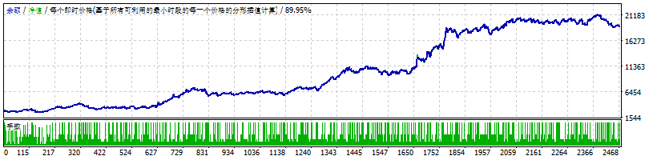

H1 定方向
EMA20/EMA60、ADX 与 ATR 共同确认趋势方向和可交易波动区间。没有明确方向时不下单。
MT4 · XAUUSD · M5 · 单向单仓
H1 判断方向，M15 等待结构回踩，M5 用已收盘 K 线执行。它不是网格、马丁或多空对锁；盈利依赖控制亏损，并让顺势尾仓继续运行。
起始资金 $3,000 · 固定 0.10 手 · 点差 35 · Every Tick · 历史结果不构成收益承诺

01 / STRATEGY
只在多周期方向、结构和执行条件一致时入场。每一层负责一个问题，避免把单一指标当成完整信号。
EMA20/EMA60、ADX 与 ATR 共同确认趋势方向和可交易波动区间。没有明确方向时不下单。
价格回到 EMA20 附近形成结构，而不是在趋势末端追价。ATR 限制过度延伸。
突破或回踩反弹必须由已收盘 K 线确认，避免使用未完成 K 线造成回看偏差。
1R 移保本，1.5R 平掉 50%，剩余仓由 M5 EMA25 反向保护与 M15 分型跟踪管理。
已有主仓或尾仓时不重复开启新的主单，不依赖多空互锁制造账面稳定。
即使券商把注释改成 from #票号，仍按 Symbol 与 Magic 继续执行退出逻辑。
02 / EVIDENCE
所有核心数字来自最终交付 SET。页面同时呈现主样本、年度样本与不利起点，不只展示最好的一条曲线。
| 起始日期 / 条件 | 净利润 | 最终资金 | PF | 相对回撤 | 结论 |
|---|---|---|---|---|---|
| 2024-09-26，点差 35 | +$15,941.25 | $18,941.25 | 1.20 | 30.19% | 主样本 |
| 2026-01-01，点差 35 | +$8,533.31 | $11,533.31 | 1.24 | 24.09% | 盈利 |
| 2025-03-30，点差 35 | +$12,659.70 | $15,659.70 | 1.18 | 28.43% | 盈利 |
| 2025-09-26，点差 35 | +$940.08 | $3,940.08 | 1.10 | 35.62% | 偏弱 |
| 2026-03-30，点差 35 | −$604.85 | $2,395.15 | 0.53 | 38.78% | 保护触发 |
| 2026-04-13，点差 35 | −$1,036.84 | $1,963.16 | 0.40 | 36.67% | 保护触发 |
| 两年，点差 60 | $0.00 | $3,000.00 | — | 0.00% | 0 笔交易 |
03 / RISK
V1.21 的改进重点不是让每段行情都盈利，而是在连续不利行情中停止扩大损失。
SET 将最大允许点差设为 45。固定点差 60 的两年压力测试为 0 笔交易，而不是带成本硬做。
基准取 $3,000 与历史最高权益的较大值。权益跌到基准的 65% 后停止新开仓，只管理已有仓位。
权益低于 $3,000 时固定手数按比例缩小；账户盈利后仍不超过 0.10 手，不自动复利放大风险。
黄金在数据公布、跳空、流动性下降和服务器延迟期间可能出现滑点、拒单、扩大点差或止损成交偏差。回测无法完整模拟这些执行风险。
两年主样本的利润因子仅为 1.20，意味着交易成本和报价差异足以明显侵蚀优势。滚动测试已经出现亏损窗口，任何启动日期都没有盈利保证。
高水位保护是停止新仓机制，不是精确的账户止损。已有持仓仍可能让实际回撤短暂越过设定线。不得使用借款、生活费或无法承受损失的资金。
04 / DEPLOYMENT
该版本用于模拟验证和后续小资金实测。未完成券商环境核对前，不应直接扩大资金。
本页验证的是 $3,000 / 0.10 手。$500 / 0.02 手并非完全等比例风险，且不属于本页最终验证口径。低于 $3,000 必须重新设置参考净值并独立回测，不得直接复制参数。
05 / METHODOLOGY
未纳入真实佣金、动态滑点、网络延迟、拒单、掉线、VPS 故障、流动性缺口和 Tickmill 实际逐笔报价。模拟盘表现也不能直接证明真实账户成交质量。